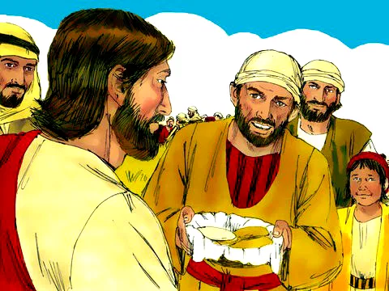
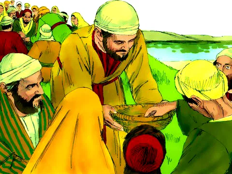
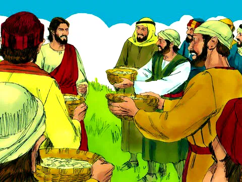

Jesus Alimenta 5000 Pessoas
Referência Bíblica: João 6:1-13
Essa história fala-nos sobre um grande milagre realizado por Jesus. Ele multiplicou o pequeno lanche de um menino, de tal forma que alimentou milhares de pessoas. Já imaginou que coisa maravilhosa?
Grande multidão seguia Jesus, porque via seus milagres, sinais extraordinários e como curava a muitas pessoas. Então Jesus sentou-se num monte com seus discípulos e vendo a grande multidão que se aproximava dele. Ele teve muita pena de toda aquela gente, porque eram como um imenso rebanho de ovelhas sem pastor. Então começou a lhes ensinar muitas coisas. Como já ia ficando muito tarde, os discípulos disseram a Jesus: — Este lugar é muito afastado e já é bastante tarde. Manda as pessoas irem embora para que possam comprar nas redondezas, qualquer coisa para comer. Mas Jesus lhes respondeu: — Deem vocês mesmo alguma coisa para eles comerem! Eles disseram: Onde compraremos pão para tanta gente? Precisaríamos de no mínimo de 200 moedas de prata... Então Jesus disse: — Vão ver quantos pães vocês têm. Então André, mostrou-lhe um menino que tinha 5 pães e 2 peixinhos. Mas o que seria isso, para uma multidão tão grande? Jesus disse: Mandem todos se assentarem. Sentaram-se em grupos de 100 e de 50. Havia muita grama naquele lugar e eram quase 5 mil homens ali.
Então, Jesus pegou nos pães e peixes, olhou para o céu, os abençoou. Depois repartiu os pães e peixes e mandou que os discípulos distribuíssem entre todos. Todos comeram até ficarem satisfeitos e ainda recolheram 12 cestos cheios de pedaços de pães e peixes. Eram quase 5 mil homens que comeram.
Moral da História
Jesus tem compaixão e se importa com as pessoas. Ter compaixão significa querer ajudar alguém que esteja sofrendo. Jesus via as pessoas doentes e as curava, viu-as com medo e acalmou a tempestade e agora, viu-as com fome e as alimentou. Ele não somente teve pena delas (sem fazer nada), mas tomou a iniciativa de fazer algo para as ajudar. Jesus recebeu a pequena oferta do lanchinho de um menino e multiplicou para alimentar milhares de pessoas. Jesus serviu às pessoas. Deus abençoará também os seus pequenos atos de compaixão quando você pegar no pouco que tem para abençoar a outros. Compartilhe com amor e generosidade aquilo que Jesus tem lhe dado.